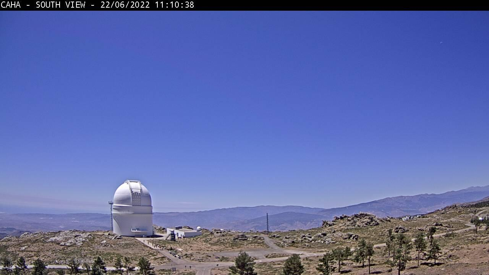
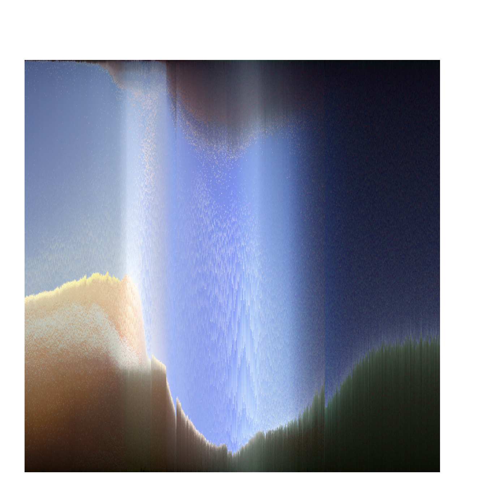
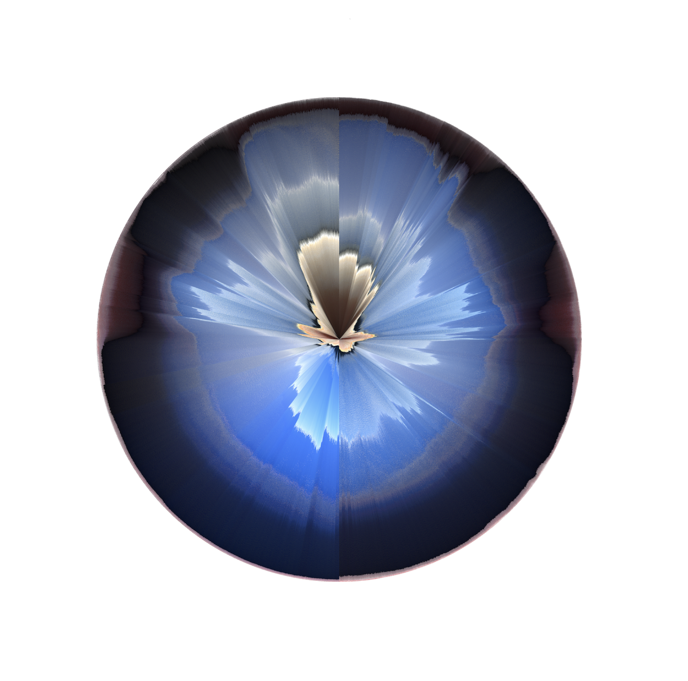
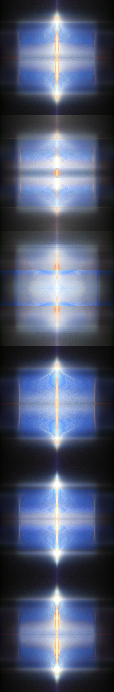

Twilight Fabric
During the early months of lockdown I became increasingly interested in watching the slow footage from webcams based in random locations around the world. Through a vast network of cameras, every genre of interior space and landscape is represented. This was the gentlest most uneventful form of TV at that moment in time. I wanted to explore ways of capturing the ambience of CCTV footage through representing the subtle shifts in light and colour occurring within these broadcasts.

I developed a number of images that capture the colours within CCTV footage at twilight across different evenings. I became particularly attached to footage from a weather cam at the Calar Alto Observatory in the mountainous desert of Northern Spain. Through experimenting with different colour sorting algorithms and mirroring recordings to create patterns, the unique oscillations in colour and differences across evenings become more legible. Recordings were captured late into the evening on my Raspberry Pi computer and I enjoyed waking up each morning to see what unique patterns had been generated.


